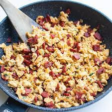

Scrambled Eggs with Chorizo

Description
This is an authentic Mexican breakfast. My husband
is full Mexican and he taught me this simple and
delicious breakfast. This is for two people and
I use no more than six eggs for the both of us.
You might use less or more, it doesn't matter. Enjoy!
Ingredients
- cooking spray
- ¼ cup Mexican-style chorizo, or more to taste
- 6 eggs
- salt to taste
Steps
- Spray a large nonstick skillet with cooking spray; warm over medium-high heat. Add chorizo; cook and stir until browned, about 5 minutes.
- Whisk eggs and salt together in a bowl. Pour into the skillet; cook and stir until eggs are set, about 5 minutes.